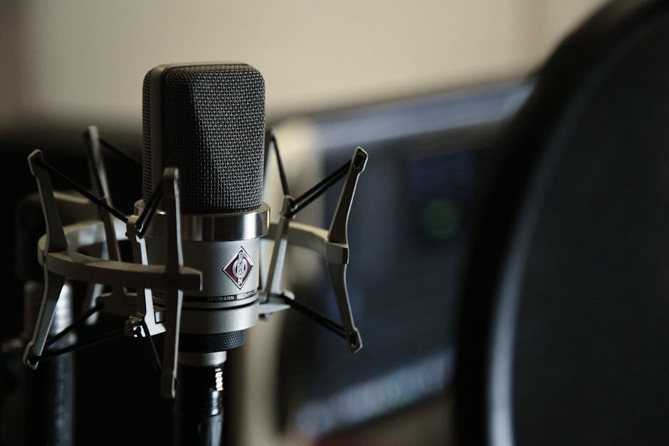

AI DAILY
AI 行业日报
2026年3月27日 · 精选 7 条
01技术突破
Google TurboQuant让KV缓存缩小6倍 存储芯片股应声暴跌

6倍压缩，零精度损失。Google Research 发布 TurboQuant 算法，把大模型推理时的 KV 缓存从 16-bit 压到 3-bit，内存占用直接砍掉 83%。在 H100 GPU 上实测，注意力计算加速最高达 8倍
消息一出，存储芯片板块集体跳水。SK Hynix 跌6%，三星跌近5%，美股 Micron、Western Digital、SanDisk 盘中跌幅 3%-6%。分析师认为这轮抛售更多是获利了结，长期看 AI 对内存的需求只会更大
INSIGHT
做存储的朋友说得直接："怕的不是省内存，怕的是省完之后客户觉得不用加卡了。" 不过话说回来，context window 越长，省下的内存马上会被更长的对话吃掉。短期股价是情绪，中期需求可能反而上涨
02人事变动
xAI联创12人走了10个 Musk承认"第一次没建对"
只剩两个人了。Musk 2023年拉了11个人一起创办 xAI，到这周，10位联合创始人已经离开，只剩 Manuel Kroiss 和 Ross Nordeen
最近走的是 Zihang Dai 和 Guodong Zhang，之前 Toby Pohlen、Jimmy Ba、Tony Wu、Greg Yang 从一月起陆续离职。Bloomberg 报道说有人受不了 Musk 的"极端硬核"工作模式，也有人拿到了竞争对手的更好 offer
INSIGHT
Musk 自己在 X 上发了一句："xAI 第一次没建对，正在从头重建。" 这话在硅谷创始人嘴里很少听到。不过 xAI 手里有 Grok、有算力集群、有 X 的数据飞轮，人走了可以再招。真正的问题是：重建需要时间，而对手不会等
03行业动态
Anthropic 52天发74个版本 Claude登顶美区App Store
一家做基础模型的公司，冲到了 App Store 免费榜第一。3月1日，Claude 登顶美区 App Store，免费用户比1月增长60%，日注册量是去年11月的三倍
背后是一组疯狂的数据：从2月到3月下旬，Anthropic 团队在 52天里发了 74个版本。开发者工具 Claude Code 占28次，桌面自动化 Cowork 15次，API 和基础设施18次，模型本体13次。ARR 已达 140亿美元
INSIGHT
一位 YC 创始人在 Twitter 上说："我们现在选模型不看 benchmark，看谁发版最快。" Anthropic 这轮爆发不是靠一个杀手级功能，是靠密度。52天74个版本，竞争对手的产品团队看到这个数字，应该会很难受
04行业动态
Cloudflare选Kimi K2.5替换商业模型 成本直降77%

年省180万美元。 Cloudflare 把内部安全审查 Agent 的底座从商业模型切换到 Moonshot AI 的开源模型 Kimi K2.5，推理成本直降77%
这个 Agent 每天处理超过 70亿 token，已经在单个代码仓库里抓到15个以上确认漏洞。Kimi K2.5 有256K 上下文窗口，支持多轮工具调用和结构化输出，现在通过 Workers AI 对外开放
INSIGHT
做基础设施的大厂亲自下场选了一家中国公司的开源模型，这个信号比任何 benchmark 都实在。一个安全Agent跑70亿token/天，放在一年前这是科幻小说里的场景。开源模型在 Agent 场景的性价比，已经到了让商业模型不得不降价的地步
05市场数据
23万员工被AI替代 Gartner预测半数公司会把人招回来
"被裁两个月后，主管又打电话叫我回来了。"客服陈丁丁说，回到公司发现原来100人的部门，回来了一半。这不是个案——Gartner 预测到2027年，因 AI 裁员的公司中有一半会重新招聘同类岗位
大厂的刀还在落。Meta 计划在二三季度裁员20%，约1.6万人。亚马逊从去年10月起累计裁了3万白领，占白领总数10%。但 Anthropic 自己的报告也承认：AI 理论上能做94%的计算机类工作，实际业务中只搞得定 33%
INSIGHT
一位被裁又被招回的程序员朋友跟我说："AI 能写代码，但不会去跟产品经理吵架。" 理论能力和落地能力之间的缺口，大概就是那61个百分点。不过，这个缺口每个季度都在缩小
06政策监管
Wikipedia投票44:2通过 全面禁止AI生成文章
44票赞成，2票反对。3月20日，英文 Wikipedia 通过 RfC 投票，全面禁止使用 LLM 生成或改写文章内容
不过留了两个口子：编辑可以用 AI 给自己的文字做基础校对，也可以做初稿翻译。社区讨论里提到一个核心担忧——AI 生成的错误文本进入 Wikipedia，被 AI 公司爬走训练，再产出更多错误内容，形成"幻觉放大回路"
INSIGHT
做信息产品的人都懂这个恐惧：垃圾进、垃圾出，循环加速。 Wikipedia 生成一篇 AI 文章只要几秒，验证和清理却需要志愿者花几小时。这个不对等，才是投票结果这么一边倒的原因
07产品发布
Mistral开源语音模型Voxtral TTS 5秒克隆任意声音

5秒录音，克隆一个声音。Mistral 发布开源语音模型 Voxtral TTS，基于 Ministral 3B，支持英语、法语、德语等 9种语言
技术指标：首字发声延迟 90毫秒，10秒语音片段的渲染速度是实时的6倍。最有意思的是跨语言能力——用英语录制的声音样本，可以直接生成法语或阿拉伯语的语音，口音和语调特征都能保留
INSIGHT
做配音的朋友看完说："以后甲方不用等我排期了，直接拿我5秒录音就能出片。" 开源意味着任何人都能本地部署。当声音克隆的门槛降到5秒+一张显卡，版权和安全的问题，可能比技术本身跑得更快
由 Zayen知览 整理 · 构建者视角